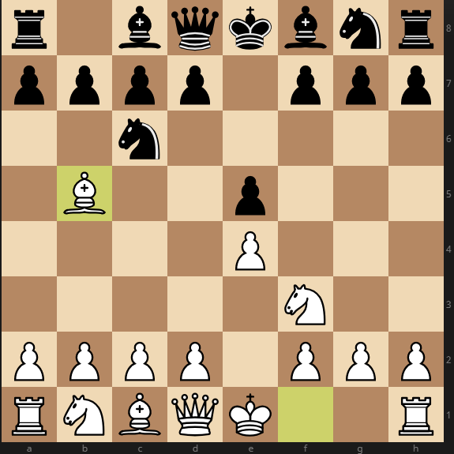

Испанская партия

Испанская партия - пожалуй, наиболее развитый дебют на сегодняшний день. Имеет миллион ответвлений: от максимально ничейного "Берлина" до
Назад На главную
известной боевой "атаки Маршала". Известен еще с XV века, с годами стал только более востребован. Его знания - мастхэв для любого
мало-мальски серьезного шахматиста!